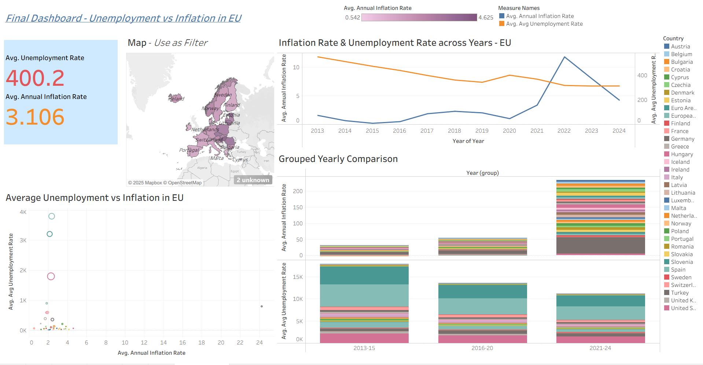
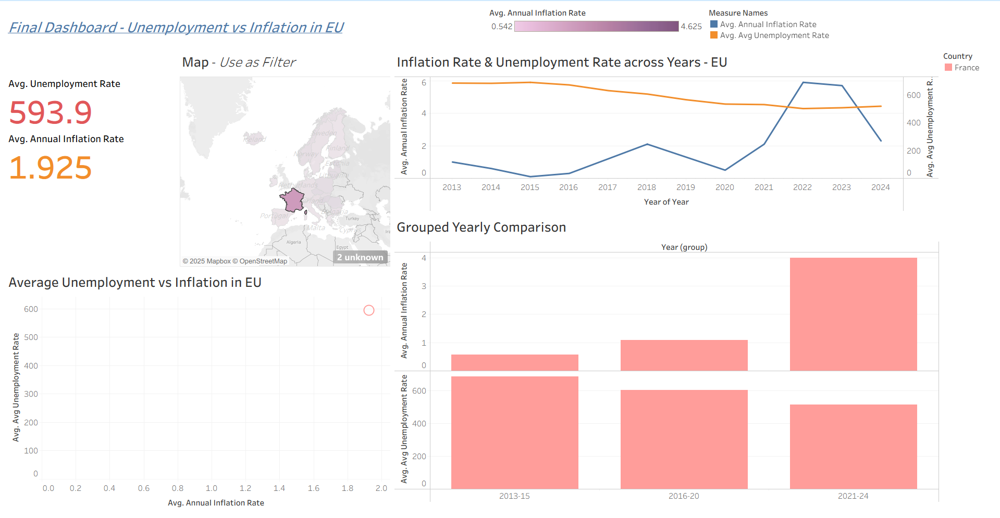

Unemployment vs Inflation in the European Union
The Goal
The aim of this Tableau project was to analyze the relationship between unemployment and inflation in the EU from 2013–2024, and to explore whether patterns consistent with the Phillips Curve are visible in the data.
Dashboard Design
The dashboard combines multiple views for both high-level and detailed analysis:
- Headline KPIs – Average unemployment index (400.2) and average inflation rate (3.106%).
- Interactive Map – Highlights regional differences; acts as a filter by country.
- Trend Analysis – Dual-axis chart showing inflation spikes (2021–2022) and unemployment decline.
- Scatter Plot – Average unemployment vs inflation, to test the inverse relationship across countries.
- Grouped Comparison – Aggregated by 2013–15, 2016–20, and 2021–24 for structural insights.
Key Insights
- Inflation surged after 2020, especially in 2021–22, while unemployment declined — echoing the Phillips Curve trade-off.
- Structural unemployment persisted in some countries regardless of inflation trends.
- Short-term shocks like the pandemic and energy crisis disrupted gradual patterns.
Why It Matters
This dashboard turns abstract economic indicators into actionable insights. Users can compare countries, detect anomalies, and explore how EU economies reacted to shocks. It’s an example of using visualization to make macroeconomics more tangible.
Tools & Skills
- Tableau – Interactive dashboards with filters, KPIs, maps, scatter plots.
- Data Transformation – Aggregation by country and year.
- Visualization Best Practices – Dual-axis charts, grouped comparisons, accessible storytelling.
Dashboard Preview


← Back to Home
🔗 Download Tableau File